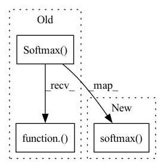

Pattern ID :11660
Before Change
// Apply the attention mask
w = w + attention_mask
w = nn.Softmax(dim=-1)( w)
w = self.attn_dropout(w)
// Mask heads if we want to
if head_mask is not None:After Change
w = w + attention_mask
// w = nn.Softmax(dim=-1)(w)
w= torch.softmax( w,dim=-1)
w = self.attn_dropout(w)
// Mask heads if we want to
if head_mask is not None:In pattern: SUPERPATTERN
Frequency: 4
Non-data size: 3
Instances Fragment ID: 39494410
Project Name: saareliad/ftpipe
Commit Name: f425b1397e951a9c7f000859dd49902ce61a30bd
Time: 2019-12-12
Author: alondej@gmail.com
File Name: NLP_models/modeling_gpt2.py
M Class Name: Attention
N Class Name: Attention
M Method Name: _attn(6)
N Method Name: _attn(6)
M Parent Class: nn.Module
N Parent Class: nn.Module
M File Name: NLP_models/modeling_gpt2.py
N File Name: NLP_models/modeling_gpt2.py
M Start Line: 154
M End Line: 160
N Start Line: 154
N End Line: 161
Before Change
def forward(self, g_t: torch.Tensor) -> torch.Tensor:
train_bs, class_num = g_t.size(0), g_t.size(1)
g_t_temp = g_t / self.temperature
g_t_temp_softmax = nn.Softmax(dim=1)( g_t_temp)
target_entropy_weight = entropy(g_t_temp_softmax).detach()
target_entropy_weight = 1 + torch.exp(-target_entropy_weight)
target_entropy_weight = train_bs * target_entropy_weight / torch.sum(target_entropy_weight)
c_matrix = g_t_temp_softmax.mul(target_entropy_weight.view(-1,1)).transpose(1,0).mm(g_t_temp_softmax)After Change
def forward(self, logits: torch.Tensor) -> torch.Tensor:
batch_size, num_classes = logits.shape
predictions = F.softmax( logits / self.temperature, dim=1) // batch_size x num_classes
entropy_weight = entropy(predictions).detach()
entropy_weight = 1 + torch.exp(-entropy_weight)
entropy_weight = (batch_size * entropy_weight / torch.sum(entropy_weight)).unsqueeze(dim=1) // batch_size x 1 Fragment ID: 39494408
Project Name: thuml/transfer-learning-library
Commit Name: 7f63cd30ea0e7cf8961db90d2af8630e2429b434
Time: 2020-08-28
Author: 13126830206@163.com
File Name: dalib/adaptation/mcc.py
M Class Name: MinimumClassConfusionLoss
N Class Name: MinimumClassConfusionLoss
M Method Name: forward(2)
N Method Name: forward(2)
M Parent Class: nn.Module
N Parent Class: nn.Module
M File Name: dalib/adaptation/mcc.py
N File Name: dalib/adaptation/mcc.py
M Start Line: 17
M End Line: 23
N Start Line: 41
N End Line: 46
Before Change
return torch.tanh(x)
def softmax(x, axis=None):
return torch.nn.Softmax(dim=axis)( x)
def minimum(x,y):
return torch.minimum(x, y)
After Change
def softmax(x, axis=None):
axis = axis or -1
return torch.softmax( x, dim=axis)
def minimum(x,y):
return torch.minimum(x, y)
Fragment ID: 39494409
Project Name: zj-zhang/amber
Commit Name: 199d5986c6c56617052c61676eb82c4ba7ec8ba2
Time: 2022-12-05
Author: zzj.zju@gmail.com
File Name: amber/backend/pytorch/math.py
M Class Name: AnonimousClass
N Class Name: AnonimousClass
M Method Name: softmax(2)
N Method Name: softmax(2)
M Parent Class:
N Parent Class:
M File Name: amber/backend/pytorch/math.py
N File Name: amber/backend/pytorch/math.py
M Start Line: 36
M End Line: 36
N Start Line: 38
N End Line: 39
Before Change
attn_mask = ProbMask(B, H, L_Q, index, scores, device=V.device)
scores = scores + attn_mask.additive_matrix
attn = nn.Softmax(dim=-1)( scores)
context_in[torch.arange(B)[:, None, None],
torch.arange(H)[None, :, None],
index, :] = torch.matmul(attn, V)After Change
attn_mask = ProbMask(B, H, L_Q, index, scores, device=V.device)
scores.masked_fill_(attn_mask.mask, -np.inf)
attn = torch.softmax( scores, dim=-1) // nn.Softmax(dim=-1)(scores)
context_in[torch.arange(B)[:, None, None],
torch.arange(H)[None, :, None], Fragment ID: 39494407
Project Name: zhouhaoyi/informer2020
Commit Name: 70524e942cdc80a07ea1caffa907d92544701cc5
Time: 2020-12-08
Author: 1095715895@qq.com
File Name: models/attn.py
M Class Name: ProbAttention
N Class Name: ProbAttention
M Method Name: _update_context(7)
N Method Name: _update_context(7)
M Parent Class: nn.Module
N Parent Class: nn.Module
M File Name: models/attn.py
N File Name: models/attn.py
M Start Line: 87
M End Line: 90
N Start Line: 79
N End Line: 82